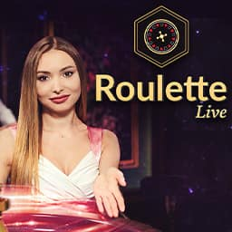

Con le scommesse Wintoto live punti a partita già iniziata, mentre l'incontro scorre sotto i tuoi occhi. Il palinsesto copre parecchi sport — calcio, tennis, basket, pallavolo, esports — con quote che si muovono seguendo quello che succede in campo. Prima di buttarti, però, un controllo su licenza ADM, limiti e metodi di pagamento per chi gioca dall'Italia è d'obbligo: la disponibilità del servizio e il dominio autorizzato vanno verificati nell'elenco ufficiale dei concessionari.
Cos'è la sezione Scommesse Live di Wintoto
La sezione live mette insieme gli eventi già partiti o lì lì per cominciare. Rispetto al pre-match cambia tutto: qui le quote ballano in base a gol, punti, cartellini, possesso palla, infortuni e minuti che restano.
Fatto l'accesso, apri l'area dedicata alla diretta e scegli una competizione. Il servizio gira 24 ore su 24, ma quanti incontri trovi dipende dal calendario internazionale. Nelle ore di punta ci sono campionati di calcio, tornei ATP, basket ed esports giocati in fusi orari diversi.
Il palinsesto può includere mercati come risultato finale, over/under, prossimo gol, handicap e vincente del set. Le selezioni sospese per un attimo non si giocano: capita durante un'azione pericolosa o mentre il sistema aggiorna il punteggio.
Come funzionano le scommesse live su Wintoto
Per piazzare una giocata in-play il percorso è dritto:
- apri un account e completa le verifiche richieste;
- versa un deposito con uno dei metodi in cassa;
- seleziona un evento marchiato “Live”;
- scegli mercato e quota;
- inserisci l'importo e conferma la bolletta.
La quota che vedi può cambiare nei secondi tra la selezione e la conferma. Se succede, la piattaforma ti chiede di accettare il nuovo valore oppure rifiuta la puntata. Questo breve delay di accettazione serve a gestire lo scarto temporale tra ciò che accade sul campo, i dati che arrivano e l'ordine che parte dal giocatore.
Il cash out ti fa chiudere in anticipo una scommessa e incassare la cifra proposta prima del fischio finale. Quanto ti danno dipende dalla quota corrente e da come sta andando la giocata. Attenzione: non tutte le bollette sono idonee. L'opzione deve comparire chiara nel coupon e può sparire proprio nelle fasi che contano.
Se una giocata resta appesa, viene rifiutata o il cash out scompare, conserva l'ID del coupon: con evento, orario e importo alla mano l'assistenza risolve più in fretta. Stessa cosa se sospetti un evento calcolato in modo errato: fai riferimento al regolamento del mercato prima di contestare.
Sport e mercati live disponibili
L'offerta reale cambia ogni giorno. Serie A, Champions League e circuiti ATP ci sono quando gli incontri rientrano in calendario e il provider di quote li copre.
| Sport | Mercati live tipici |
|---|---|
| Calcio | Risultato finale, doppia chance, over/under, prossimo gol, handicap asiatico, entrambe le squadre segnano |
| Tennis | Vincente incontro, set o game, handicap game, punteggio esatto del set, tie-break |
| Basket | Vincente, handicap, totale punti, vincente del quarto, punti della squadra |
| Pallavolo | Vincente incontro, vincente set, over/under punti, handicap set |
| Esports | Vincente mappa o match, handicap mappe, totale round, primo obiettivo |
Il numero di eventi live non è fisso, e non va confuso con il totale del pre-match. Prima di inserire la puntata conviene guardare regolamento, tempi supplementari inclusi o esclusi e criteri di validazione: da un mercato all'altro cambiano.
Streaming live e statistiche in tempo reale
Per gli eventi coperti, la sezione live può mostrare un player video oppure un widget grafico con la cronologia delle azioni e il punteggio aggiornato. Lo streaming dipende dai diritti territoriali e dalla competizione; la sua presenza la verifichi dall'icona video accanto all'incontro.
Le statistiche possono comprendere possesso palla, tiri, corner, cartellini, attacchi pericolosi e come si evolve il punteggio. Nel tennis contano soprattutto servizio, break point e game vinti. Roba che aiuta a leggere il match, ma occhio: può arrivare con qualche secondo di ritardo e non garantisce l'esito della giocata.
Smartphone, tablet e computer recenti in genere bastano, a patto di avere una connessione stabile. Se la rete arranca, il widget statistico consuma molti meno dati dello streaming.
Scommesse live da mobile
Le Wintoto scommesse sportive da mobile passano per il sito responsive, su iOS e Android. L'interfaccia mobile-first ridimensiona palinsesto, coupon e comandi allo schermo, così segui il punteggio e confermi una giocata senza toccare il desktop.
Un'eventuale app nativa va scaricata solo da uno store ufficiale o da una fonte verificata dell'operatore. Il sito mobile resta la strada più rapida, visto che non chiede installazione. Con le quote che schizzano su e giù, meglio tenere la pagina aggiornata ed evitare di confermare due volte lo stesso ordine se la rete rallenta.
Quote live, limiti di puntata e pagamenti
Le quote live sono dinamiche: scendono o salgono a seconda della probabilità calcolata in quel preciso momento. Prima di confermare, controlla sia la quota accettata sia il ritorno possibile, soprattutto se hai lasciato attiva l'accettazione automatica delle variazioni.
Puntata minima e tetto massimo possono dipendere da sport, mercato, campionato e profilo del conto. Non esistendo un limite unico valido per tutto, il dato buono è quello che leggi nel coupon. L'operatore può anche mettere un massimale sulla vincita o chiedere una revisione manuale.
Per il mercato italiano, la cassa indica quali strumenti sono davvero disponibili tra carte Visa o Mastercard, bonifico bancario e portafogli elettronici. Depositi e prelievi vanno fatti con metodi intestati al titolare del conto. I tempi dipendono da verifica KYC, banca e canale scelto: un'elaborazione annunciata “in pochi minuti negli orari lavorativi” non significa accredito bancario immediato.
Le condizioni del Wintoto bonus benvenuto — rollover, quota minima, mercati esclusi — vanno lette prima di usare il credito promozionale nelle giocate live.
Sicurezza, licenza e gioco responsabile
La connessione usa crittografia SSL a 256 bit per proteggere credenziali e dati che viaggiano in rete. La cifratura, però, non sostituisce una licenza valida. Chi gioca dall'Italia deve verificare che il sito e il suo dominio siano autorizzati da ADM, ex AAMS, controllando i dati societari e l'elenco ufficiale dei concessionari. Senza autorizzazione ADM, le tutele previste per il mercato italiano non ci sono.
Anche eventuali certificazioni di fair play devono essere identificabili, con il nome dell'ente di audit e informazioni verificabili. Le recensioni Wintoto, da sole, non bastano a dimostrare affidabilità, tempi di pagamento o conformità normativa.
Gli strumenti di gioco responsabile dovrebbero includere limiti di deposito, pausa dal gioco, chiusura del conto e autoesclusione. Le scommesse sono riservate ai maggiorenni. E il live betting non è la scorciatoia per recuperare in fretta una perdita. L'assistenza in chat è indicata come disponibile 24/7 per questioni su conto, bollette e pagamenti.
Domande frequenti sulle scommesse live Wintoto
Come posso contattare l'assistenza Wintoto?
Il canale più rapido è la chat, indicata come attiva 24 ore su 24 e raggiungibile dall'icona di supporto nel sito o nell'area del conto. Altri canali, come email o modulo di contatto, e gli orari di risposta li trovi nella sezione assistenza. Per una bolletta contestata comunica subito ID della giocata, evento, orario e importo.
Wintoto offre il cash out sulle scommesse live?
Il cash out può essere disponibile su scommesse ed eventi idonei. Quando è attivo, il pulsante spunta nella bolletta con la cifra incassabile. L'offerta cambia in tempo reale e può sparire per qualche istante durante gol, rigori, match point o altre azioni decisive.
È possibile guardare lo streaming live delle partite?
Lo streaming può esserci per gli eventi coperti da diritti video, riconoscibili dall'apposita icona. Negli altri casi vedi un widget con punteggio e statistiche.
Quali sport sono disponibili per le puntate in diretta?
Il palinsesto copre diversi sport, con calcio, tennis, basket, pallavolo ed esports in prima fila. La disponibilità varia con il calendario. Tra i mercati più comuni ci sono risultato finale, over/under, handicap, prossimo gol e vincente di set, game o mappa.
Qual è la puntata minima nelle scommesse live?
Meglio non sparare un importo unico, perché il minimo cambia secondo evento, mercato e valuta del conto. Il valore che vale appare nel coupon prima della conferma. Nello stesso punto vedi quota aggiornata, ritorno potenziale ed eventuale tetto massimo accettato.